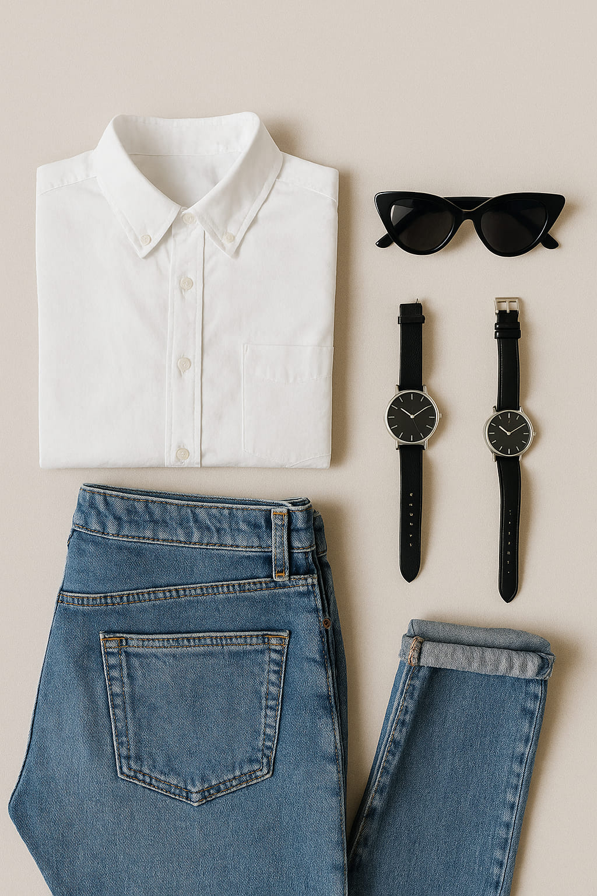
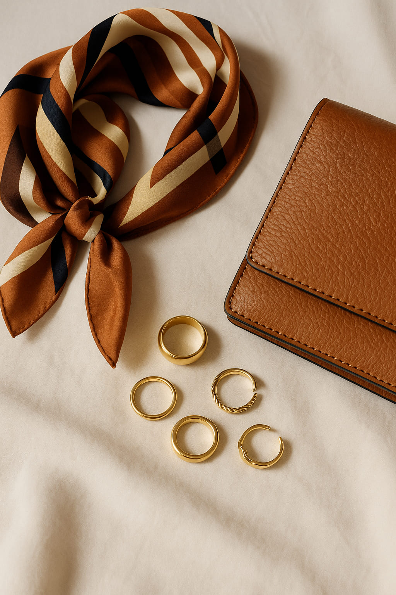
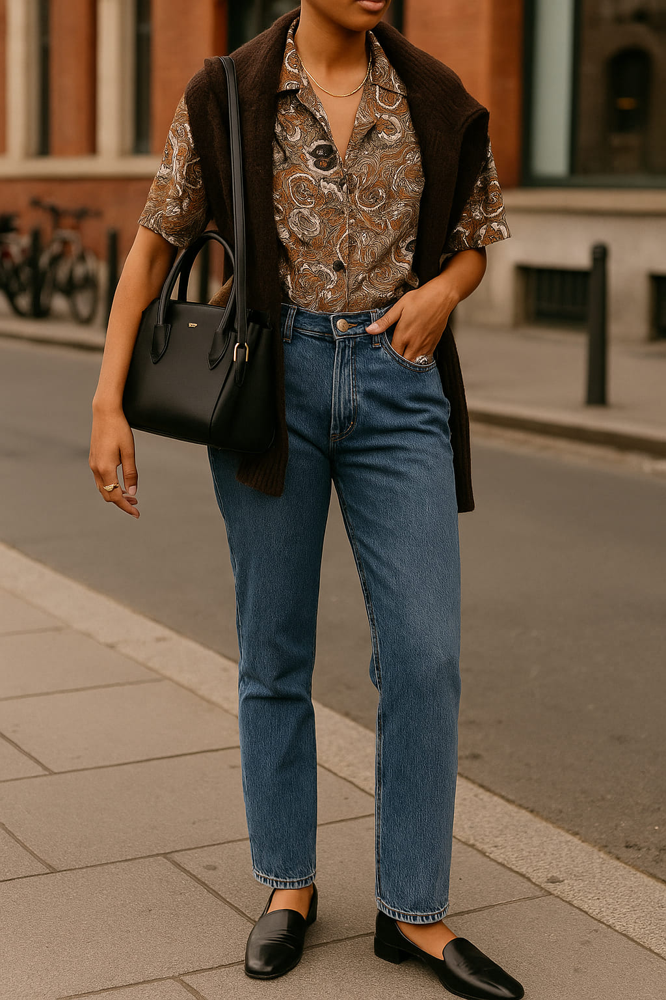
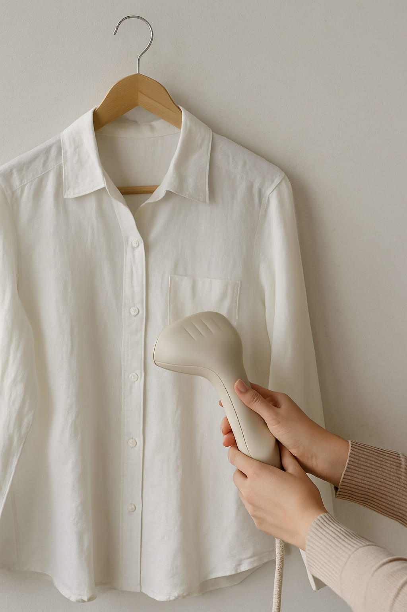
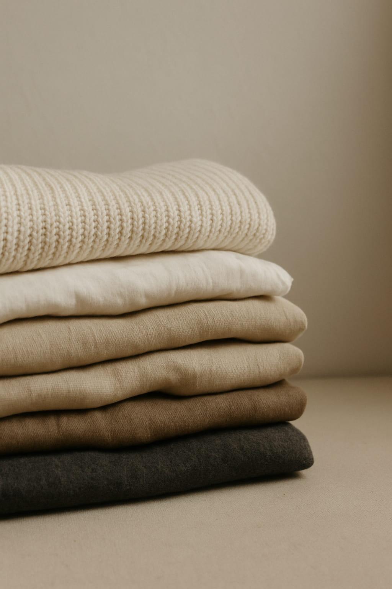

Evergreen Style Tips: The 10 Fashion Habits That Always Work
Trends come and go, but real style—elevated, effortless, and lasting—is rooted in timeless habits. If you're looking to upgrade your wardrobe without constantly chasing what's new, this guide is for you. These are the fashion principles that work every time, whether you're dressing for work, weekends, or anything in between.
1. Dress for Your Body, Not Just the Trend
Start with your silhouette. The best-dressed people understand what flatters them and stick to it. That doesn’t mean avoiding trends—it means filtering them through what works for you. Understanding proportions is more important than understanding runway calendars.
"Personal fit always outlasts fashion trends."
2. Build Around Neutrals
Neutrals are the secret backbone of any stylish wardrobe. Beige, camel, black, white, navy—they let your statement pieces shine and work across seasons. A well-cut camel coat or tailored black pants will do more for your look than ten fast fashion impulse buys.
3. Invest in Accessories That Speak
Your outfit is the canvas; your accessories are the exclamation points. Think sunglasses, watches, scarves, belts. Elevate your basics with standout pieces that can be worn year after year. Bonus points for textures like leather, silk, or gold hardware.
4. Own the Power of Tailoring
A $50 jacket that fits perfectly will always look better than a $500 one that doesn’t. Tailoring your clothes—even just a little—makes a massive difference. Pinch the waist, hem the pants, tuck the sleeves. Make it yours.
5. Mix High and Low
Don’t be afraid to wear Zara with vintage, or thrifted denim with designer shoes. Style is about balance and self-expression. Some of the most memorable outfits blend accessibility with aspiration.
6. Layer with Purpose
Layering isn’t just for weather—it’s for depth. Use structure (like blazers), softness (like knits), and contrast (like denim with silk) to create a visual story. Learn to balance colors and lengths. The art is in the combination, not the quantity.
"Layering is the silent language of style."
7. Care for Your Clothes
Style isn’t just about what you buy—it’s how you treat it. Hang your garments properly, clean them with care, and repair when needed. Looking polished starts in your closet, not at the register.
8. Define Your Uniform
Great dressers often wear the same things over and over—but in ways that feel intentional. Maybe it’s black trousers and white shirts, or denim and structured coats. Know your go-to look. It’ll become your signature.
9. Choose Fabric Over Logo
Quality shows. Wool, linen, silk, cotton—prioritize natural fabrics over logos or branding. It feels better on your skin and reads better in photos. Don’t pay for a name; pay for the experience of wearing something excellent.
10. Let Confidence Finish the Look
Nothing you wear will ever speak louder than how you carry yourself. Shoulders back, eye contact forward. The best outfits are worn, not shown. When in doubt, stand tall. Confidence is always in style.
Words by Style Atlas